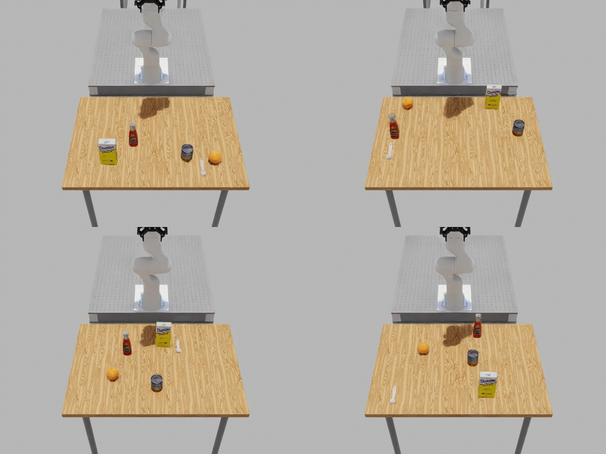
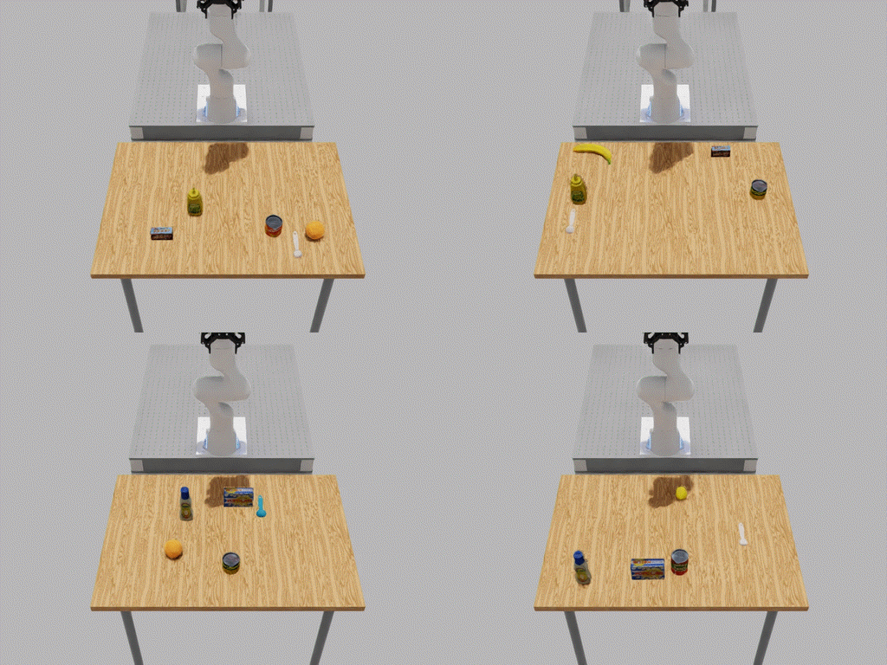

Homogeneous and Heterogeneous Object Placement#
These terms describe object identity across parallel environments, not whether the layouts are identical:
Homogeneous placement uses the same registered object for a role in every environment. Its solved pose can still differ between environments and resets.
Heterogeneous placement uses a
RigidObjectSetfor a role. Each environment receives one member of the set, so object geometry can differ across environments.
Both modes use the same relations, solver, validators, and layout-pool workflow. They differ in how Arena chooses objects and supplies their geometry to the solver.
Todo
Add a general RigidObjectSet concept page under the asset-object
documentation and link it from this placement-specific comparison.
Implementation Differences#
Stage |
Homogeneous objects |
Heterogeneous objects |
|---|---|---|
Environment definition |
Add a registered |
Add a |
Per-environment assignment |
The environment clones one |
Arena selects one set member for each environment at build time, after
the environment count is known and before assets are spawned. Ordered
sets repeat their member order; sets with |
Dimensions used by spatial relations |
Arena broadcasts the object’s bounding box to every environment. |
Arena uses the selected member’s bounding box in each environment. |
Construction |
Every environment spawns the same USD for that role. |
Every environment spawns the USD selected for that environment. |
Reset |
The object identity stays fixed while the layout may change. |
The selected member stays fixed while the layout may change. |
These bounding boxes provide object dimensions for spatial relation solving.
Collision checks separately use the configured BBOX or MESH
representation.
Setting placement_seed makes random object-set assignments and layout
generation reproducible. Arena fixes object-set assignments while building the
environment and keeps them unchanged for its lifetime so that spawned USDs and
the geometry used for placement remain aligned.
Homogeneous Example#
The maintained droid_table_multi_object_placement environment places the
same five registered objects on a Maple table in every environment in
homogeneous mode. The solver can produce a different layout for each
environment and reset.
{kind=link}

Run the same registered environment configuration shown in the animation:
python isaaclab_arena/evaluation/policy_runner.py \
--viz kit \
--policy_type zero_action \
--num_envs 4 \
--env_spacing 3.0 \
--placement_seed 42 \
--resolve_on_reset \
--num_steps 500 \
droid_table_multi_object_placement \
--embodiment droid_abs_joint_pos \
--episode_length_s 4.0 \
--mode homogeneous
Heterogeneous Example#
The same registered environment uses five object sets in heterogeneous mode. The sets select a fruit, bottle, can, tool, and box for each environment. The solver uses every selected member’s dimensions.
{kind=link}

The environment creates each heterogeneous role from registered variants and
attaches the same On relation used for homogeneous objects. Its builder
uses:
for set_name, variant_names in HETEROGENEOUS_VARIANT_SETS.items():
members = self._build_registered_objects(variant_names)
object_set = RigidObjectSet(name=set_name, objects=members)
object_set.add_relation(On(table_reference))
placeable_assets.append(object_set)
Run the heterogeneous configuration shown in the animation:
python isaaclab_arena/evaluation/policy_runner.py \
--viz kit \
--policy_type zero_action \
--num_envs 4 \
--env_spacing 3.0 \
--placement_seed 42 \
--resolve_on_reset \
--num_steps 500 \
droid_table_multi_object_placement \
--embodiment droid_abs_joint_pos \
--episode_length_s 4.0 \
--mode heterogeneous
The builder must know num_envs before assigning object-set members. The
runner passes this count through --num_envs; use a value greater than one to
observe different members across parallel environments.
Important
Do not set an initial pose on an object whose pose is determined by placement relations. The builder supplies its creation and reset poses. Anchors remain fixed and therefore still need a known pose.